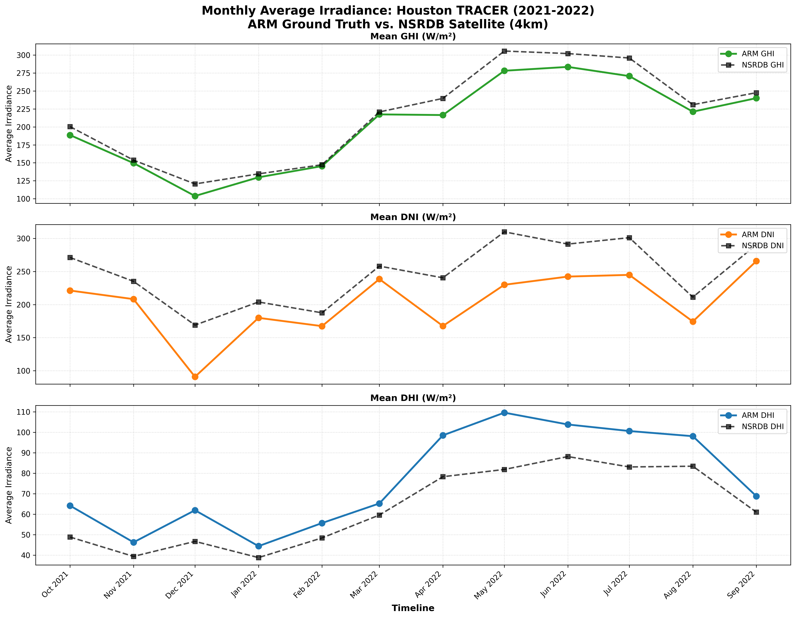
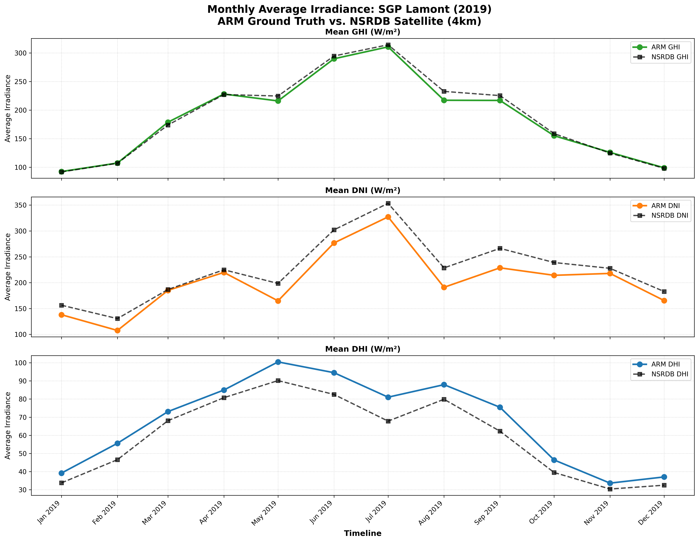

Validation of NSRDB Satellite Radiative Transfer Models against DOE ARM Ground Observations.
Chronological cross-year data isolating micro-seasonal bias under high humidity and urban aerosol conditions.

The direct comparison of DNI (Direct Normal Irradiance) highlights a persistent systemic underestimation by the satellite model during coastal haze and summer humid periods. Because dual-axis tracking systems rely aggressively on the direct beam, this macro-seasonal gap directly propagates into the structural generation errors identified in the validation matrix.
Strict 12-month calendar baseline isolating continental flat-plains weather patterns with high direct sunlight components.

In flat continental terrains, the satellite's physical solar model tracks closer to ground observations for GHI. However, localized cloud-edge enhancements and shifting aerosol dynamics captured by the ground-based pyranometers still cause noticeable divergence in the peak summer DNI profiles, illustrating the limitations of 4km satellite grid averaging.